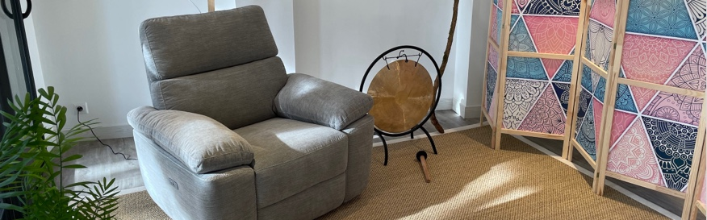

<section class="section article">
  <div class="container">
    <div class="content">
      <h1>Les séances</h1>
      <h2>Comment se déroulent les séances ?</h2>
      <p>Les séances se déroulent en 3 temps :</p>
      <ol>
        <li>Définition de votre objectif</li>
        <li>Travail hypnotique</li>
        <li>Discussion</li>
      </ol>
      <p>Elles peuvent contenir de la formation à l’auto-hypnose et des conseils de travail à domicile.</p>
      
      <h2>Combien faut-il de séances ?</h2>
      <p class="light-bg"><strong>La plupart du temps, quelques séances suffisent (2 à 5).</strong></p>
      <div class="columns">
        <div class="column is-7">
          <p>Une séance d’hypnothérapie a un effet similaire à un pierre lancée dans un lac. Les vagues se propagent au fil du temps. C’est pourquoi les séances sont espacées de 3 semaines minimum (21 jours) car c’est le temps que l’inconscient peut prendre pour intégrer toutes les informations et mettre en place les changements.</p>
          <p>Cela étant dit, le nombre de séances dépend principalement de votre objectif et de votre motivation.</p>
        </div>
        <div class="column is-5">
          
        </div>
      </div>
      <h2>Informations pratiques :</h2>
      <div class="purple-border">
ici
      </div>
      <h2>Contact et prise de rendez-vous :</h2>
      <div class="columns">
        <div class="column is-6">
          <p>La prise de rendez-vous peut se faire sur Doctolib ou par téléphone.</p>
          <p>D’autres dates ou horaires que ceux proposés sur Doctolib peuvent être possibles, dans quel cas il vous suffit de me téléphoner ou de m’envoyer un SMS.</p>
          <p>Enfin, je suis bien évidemment <strong>disponible pour répondre à vos questions.</strong></p>
        </div>
        <div class="column is-6">
          <div class="light-bg">
            <p class="person">Florent Jaouali</p>
            <p class="job">Hypnothérapeute</p>
            <p class="contact phone">06 37 33 26 55</p>
            <p class="contact email">florent@luminose.fr</p>
            <a class="button is-primary" href="https://www.doctolib.fr/hypnotherapeute/villefranche-de-lauragais/florent-jaouali?utm_medium=referral&amp;utm_campaign=website-button&amp;utm_content=option-2&amp;utm_term=florent-jaouali&amp;utm_source=florent-jaouali-website-button" target="_blank" data-reactroot="">Prendre un rendez-vous</a>
          </div>
        </div>
      </div>

      <div class="plus light-grey-bg">
        <div class="title">Pour aller plus loin</div>
        <div class="buttons">
          <a href="{{ site.baseurl }}/hypnotherapie.html" class="button is-white is-purple-bordered">Comment l’hypnose peut-elle vous aider ?</a>
          <a href="{{ site.baseurl }}/florent-jaouali.html" class="button is-white is-purple-bordered">Qui suis-je ?</a>
        </div>
      </div>
    </div>
  </div>
</section>
